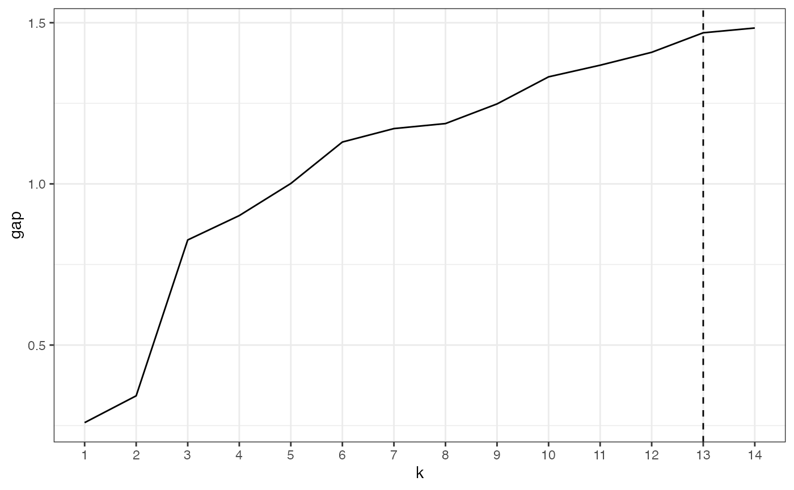

The other vignette focuses on reproducing a single clustering workflow that assumes that the number of clusters has been decided. As the app includes a few options for evaluating clusters, some of the functions are also made available in the package. The output of the clustering functions can also be used with other packages.
Preprocessing and clustering
numeric_data <- iris %>% select(Sepal.Length, Sepal.Width, Petal.Width)
dmat <- compute_dmat(numeric_data, "euclidean", TRUE)
clusters <- compute_clusters(dmat, "complete")Gap statistic
For Gap statistic, the optimal number of clusters depends on the
method use to compare cluster solutions. The package cluster includes
the function cluster::maxSE() to help with that.
gap_results <- compute_gapstat(scale(numeric_data), clusters)
optimal_k <- cluster::maxSE(gap_results$gap, gap_results$SE.sim)
line_plot(gap_results, "k", "gap", xintercept = optimal_k)
Other measures
The Shiny app also includes the option to compute average silhouette
widths or Dunn index. The function compute_metric works
similarly to compute_gapstat, whereas
optimal_score is similar to maxSE. However,
optimal_score varies only between first and global minimum
and maximum.
res <- compute_metric(dmat, clusters, "dunn")
optimal_k <- optimal_score(res$score)
line_plot(res, "k", "score", optimal_k)